CSC 466 · Week 13 · Prof. Tao Wang
From foundation models to multimodal generation
Which task most clearly calls for several valid structured outputs?
Different layouts can all satisfy the same design constraints. The other tasks ask for a label or single estimate.
| Dimension | Predictive AI | Generative AI |
|---|---|---|
| Primary output | A label, score, or number | New structured data |
| Typical question | Is this email spam? | Write a professional email |
| Mapping | Often x → y | Models p(x) or p(x|c) |
| Valid answers | Often one expected target | Often many acceptable outputs |
| Values | Estimate a house price | Create several house designs |
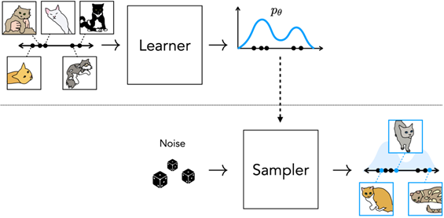
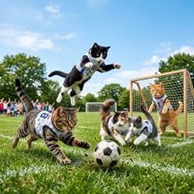
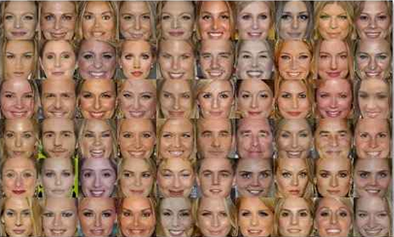
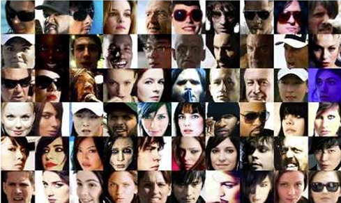
A model trained mostly on common conditions can fail on rare ones.
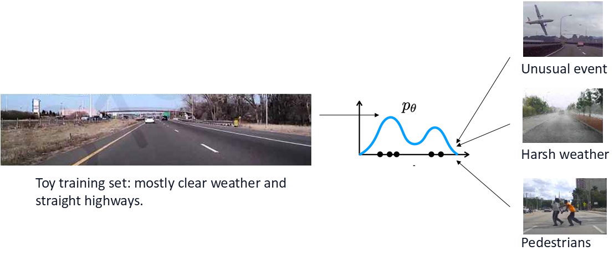
Generative models can sample new instances from a learned distribution.
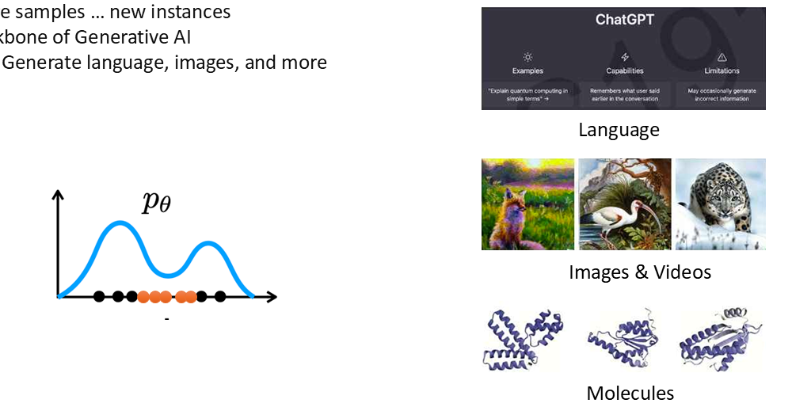
Select a card for an example or explanation.
Predict the next unit from a prefix.
A text model samples a token, appends it, and predicts again.
Learn a probabilistic latent space.
During generation, sample a latent vector from the prior, then decode it.
Train a generator against a discriminator.
The discriminator learns to distinguish real examples from generated ones, providing a training signal to the generator.
Learn to reverse a noising process.
Start with noise and iteratively apply learned reverse updates. Diffusion can operate on autoencoder latents.
Learn a velocity field that transports samples.
A sampler follows the learned velocity field from initial noise toward the data distribution.
Which model learns a velocity field for transporting samples?
Flow matching learns a velocity field. A sampler follows it from an initial distribution toward the data distribution.
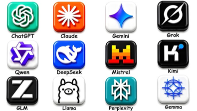
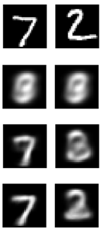
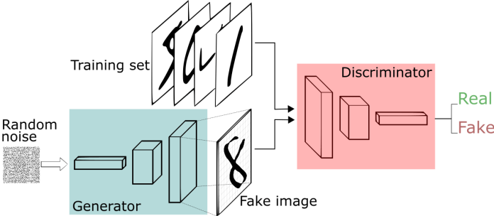
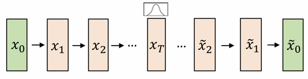
Where does ordinary text-to-image latent diffusion start at inference?
The sampler starts with fresh latent noise and uses the prompt as a condition. A decoder converts the final latent to pixels.
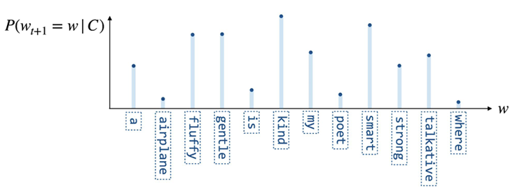
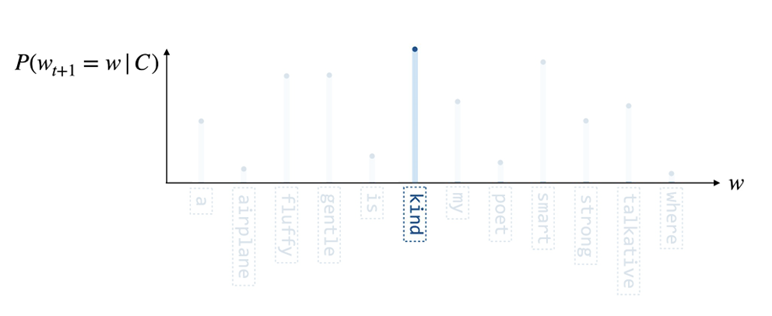
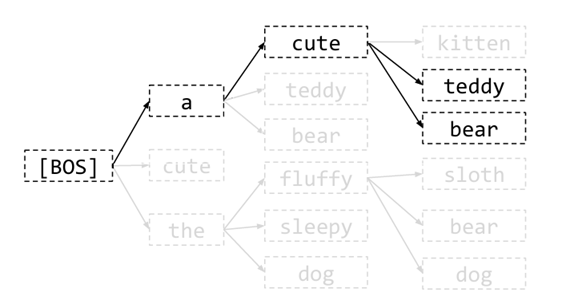
A = .55, B = .30, C = .10, D = .05. What does top-p = .85 keep before renormalization?
A alone has mass .55. Adding B reaches .85, so the new probabilities are .55/.85 ≈ .647 and .30/.85 ≈ .353. Greedy would choose A.
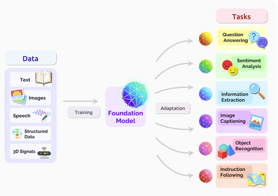
Select a card for an example or explanation.
Give instructions with no labeled examples.
Task: label the review POSITIVE or NEGATIVE. New review: “I loved this book.”
Show one labeled example first.
Example: “A waste of time” → NEGATIVE. Then classify “I loved this book.”
Show several examples that demonstrate the pattern.
Add “The service was excellent” → POSITIVE. The new review remains the same. Model weights do not change.
Which action updates parameters?
Supervised fine-tuning uses a loss and optimizer. The other choices change inference inputs or decoding.
Neither method makes generated claims automatically correct.
| Dimension | Fine-tuning | In-context learning |
|---|---|---|
| Model weights | Changed | Unchanged |
| Access | Requires training pipeline | Works through prompt or API |
| Best fit | Repeated specialization | Fast task adaptation |
| Cost | Training compute and data | Longer prompts and inference |
| Persistence | Behavior persists in model | Examples last only in current context |
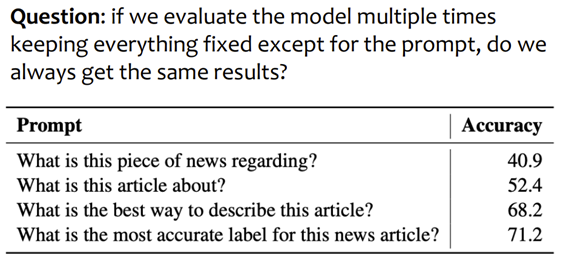
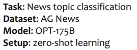
A worked example can show the expected solution method. A fluent explanation is not proof that the result is correct.
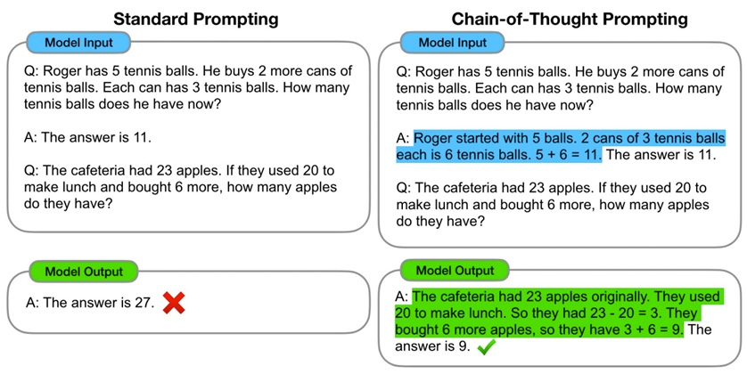
Which statement about a deployed autoregressive language model is false?
Few-shot prompting adds examples to the input. Weight changes require a training update.